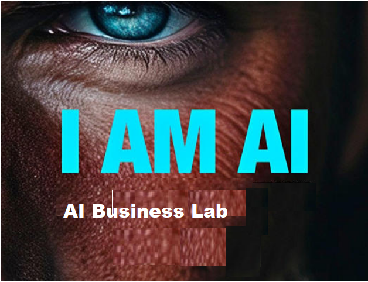

AI BUSINESS LAB
VI BYGGER FRAMTIDENS DIGITALA SYSTEM

Framtidens digitala system drivs av AI-inbyggda appar och agentbaserade system som resonerar, lär sig och agerar självständigt
VI ÄR ARKITEKTERNA BAKOM DIN DIGITALA KLON
På AI Business Lab bygger vi inte bara appar; vi bygger intelligenta ekosystem som ger din verksamhet kontext, generation av digitala system inte är passiva verktyg, utan agentbaserade partners som kan resonera, lära sig och agera självständigt för att förtydliga ditt värde.
Varför vi gör det vi gör
Vi ser hur ovärderlig expertis dagligen går förlorad i statiska dokument eller blir låst i huvudet på nyckelpersoner. Vårt uppdrag är att kunna klona denna expertis samt göra kunskapen synlig och interaktiv genom vår unika AI Capability Hub. Vad din AI Capability Hub kan göra:
- Förstår din verksamhet och hur du skapar värde (värdekedja)
- Har minne och kontext om allt du gör
- Bär ditt digitala DNA – din identitet
- Har en digital Hjärna som tänker som du
- Gör din kunskap tillgänglig ur olika perspektiv, 24/7
- Guidar och kommunicerar med din röst
- Utför arbete i realtid
- Det lär sig kontinuerligt och blir alltmer träffsäkert och smart över tid
- Kan arbeta utan dig
Framtiden är här
Med AI som motor, raderar vi gränsen mellan mänsklig expertis och digital skalbarhet. Vi bygger systemen som gör att du kan sluta sälja med gamla metoder och istället börja vägleda dina kunder in i framtiden .
Välkommen till AI Business Lab – där vi gör din expertis tidlös.